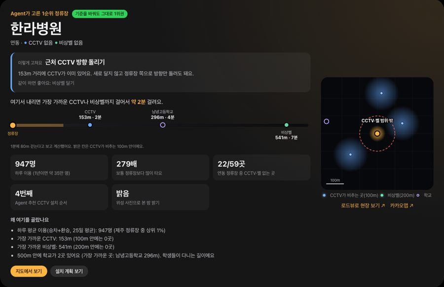
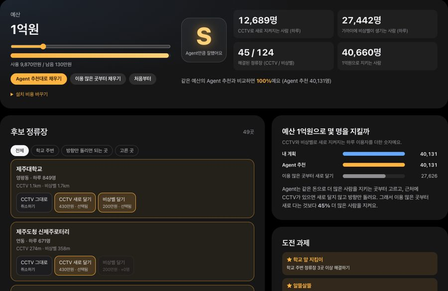
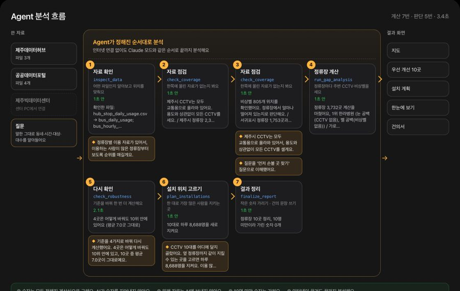

CCTV·비상벨 없는 정류장
2,848곳이용 기록이 있는 정류장의 76%안심하차 Agent · 내릴 때부터 안심하자
버스에서 내린 뒤,
밤길을 지키는 AI Agent
제주 버스 정류장 4,080곳 가운데 이용하는 사람은 많은데 CCTV도 비상벨도 닿지 않는 곳을 찾아, 먼저 손볼 곳과 고치는 방법, 예산에 맞춘 설치 계획까지 알려드려요.
Agent가 고른 1순위
한라병원하루 947명 · 근처 CCTV 방향 돌리기밤 10시~자정 승차
516명하루 평균, 제주 전체지도를 누르면 크게 볼 수 있어요 ↗
안심하차 Agent
밤에 버스에서 내린 사람은 대부분 걸어서 집으로 가요. 밤길은 정류장에서 시작돼요. 안심하차 Agent는 제주빅데이터센터·제주데이터허브·공공데이터포털에 흩어진 버스 이용, CCTV, 비상벨, 학교 자료를 하나로 합쳐 이용은 많은데 CCTV도 비상벨도 없는 정류장을 찾고, 정해진 예산으로 가장 많은 사람을 지킬 수 있는 설치 계획까지 만들어요.
제주 공공데이터 7종으로
직접 계산한 숫자예요
정류장 위치, 정류장별 이용, 시간대별 승차, CCTV 2종, 비상벨, 학교 위치
이 주제를 고른 이유
정류장 주변 밤길은 누구나 겪지만, 어디가 비어 있는지 알려주는 곳은 없었어요.
정류장은 담당이 분명해요
위치가 정확하고 이용 인원이 기록되고 맡는 부서가 있어서, 건의가 실제 예산으로 이어지기 쉬운 곳이에요.
자료가 세 곳에 흩어져 있어요
버스 이용은 빅데이터센터·데이터허브에, CCTV·비상벨·학교 위치는 공공데이터포털에 있어요. 아이디와 좌표가 서로 달라 직접 합치기 어려워요.
무엇을 몇 대 놓을지도 정해야 해요
비어 있는 곳을 알아도 "그래서 어디에, 무엇을, 몇 대"는 또 계산해야 해요. 그래서 설치 계획까지 함께 만들어요.
Agent가 하는 일
질문 하나로 자료 확인부터 건의서까지 Agent가 이어서 해요.

먼저 손볼 곳
1순위 정류장과 고치는 방법
CCTV를 새로 달지, 근처 CCTV 방향만 돌릴지 정해 주고, 걸어서 몇 분인지 보여줘요.

설치 계획
예산에 맞춘 설치 계획
예산을 정하면 Agent가 같은 돈으로 가장 많은 사람을 지키는 곳부터 골라요. 직접 바꿔 볼 수도 있어요.

분석 과정
Agent가 판단한 과정
어떤 자료를 어떤 순서로 계산했고 중간에 무엇을 판단했는지 그림으로 보여줘요.
Agent에게 물어보세요
물어보면 지도에 바로 보여드려요
"열시 반에 아라동에서 내리는데 괜찮아?", "예산 1억이면?", "어느 동네가 제일 비어 있어?"처럼 편하게 물어보세요.
-
밤에 사람이 내리는 정류장 -곳 중 CCTV도 비상벨도 닿지 않는 곳
· 그중 -은 위성으로 봐도 어두워요
동네나 번호를 누르면 확대돼요 · 끌면 이동 · Shift+끌기로 회전 · 휠로 확대
CCTV·벨 모두 없음
하나만 있음
CCTV
비상벨
위성 불빛
안심하차 Agent가 지키는 약속
위험 지도가 아니에요범죄 자료는 쓰지 않아요. 시설이 부족한 곳, 먼저 보강하면 좋은 곳을 알려줘요.
숫자를 지어내지 않아요모든 숫자는 정해진 계산식으로 구해요. AI는 순서를 정하고 설명만 해요.
원래 자료는 밖으로 나가지 않아요AI에는 집계한 숫자만 보내요. 개인정보는 다루지 않아요.
작은 숫자는 가려요하루 10명 미만인 값은 "10명 미만"으로 보여줘 반출 기준을 지켜요.
자료: 제주빅데이터센터 버스 정류소 정보·이용 현황 · 제주데이터허브 정류소별 버스 이용자, 시간대별 승차, CCTV 정보 · 공공데이터포털 버스정류소현황, 전국CCTV표준데이터, 안전비상벨위치, 초중등학교위치 · NASA Black Marble(GIBS)
우선 개선
우선 개선 장소
이용이 많고 CCTV·비상벨이 없는 순서예요. 정류장을 누르면 자세한 내용이 나와요.
순위
CSV 저장설치 계획
예산이 정해져 있다면, 어디부터 놓을까요?
정류장마다 CCTV를 새로 달지, 근처 CCTV 방향만 돌릴지, 비상벨을 달지 골라 보세요. 고를 때마다 몇 명에게 새로 CCTV·비상벨이 닿는지 바로 보여 주고, Agent의 추천과 비교해 드려요.
후보 정류장
몇 대를 놓으면 몇 명을 지킬까
설치 순서 보기
한눈에 보기
숫자로 보는 제주 밤길
꼭 알아야 할 내용 네 가지만 모았어요. 카드를 누르면 자세한 화면으로 가요.
Agent가 한 일
Agent는 이렇게 찾았어요
Agent가 어떤 자료를 어떤 순서로 계산했고, 중간에 무엇을 판단했는지 차례대로 보여드려요.
과정
Agent의 설명
분석이 끝나면 건의서가 여기에 만들어져요.